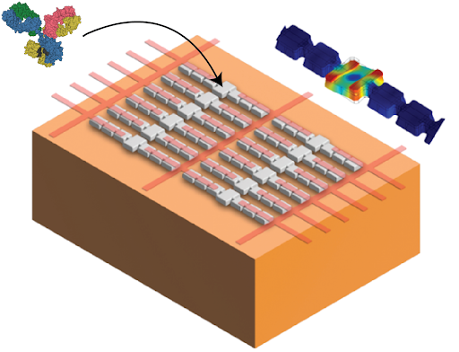

Mass spectrometry encompasses a family of techniques and tools whose goal is to measure the mass of an unknown analyte. In conventional mass spectrometry, state-of-the-art systems can distinguish analytes that differ in mass by less than a single hydrogen atom. However, they require ionization of the analytes, infer mass indirectly through charge-to-mass ratio, and suffer from low throughput. In our lab, we are developing nano-electromechanical systems (NEMS) as inertial mass sensors to circumvent the limitations of conventional systems. In NEMS-MS, we precisely track the resonant frequencies of a mechanical resonator over time and observe discrete frequency jumps when individual analytes adsorb onto the resonator surface. The size of these jumps can be used to directly extract the mass of the analytes—no ionization or charge-state assumptions required. Additionally, a millimeter-scale chip can fit tens of thousands of these nano-scale mechanical resonators, each acting as an individual mass sensor. To fully unlock the benefits of these devices for mass sensing, we are developing scalable multiplexed readout techniques that will enable high-throughput sensor arrays, with the ultimate goal of single-cell proteomics.